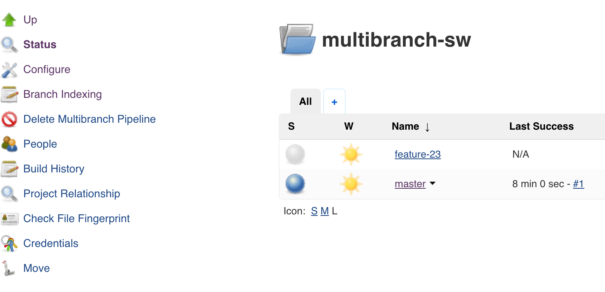

Jenkins Pipeline, Jenkins 2.0 and Beyond
Alex Soto
Red Hat Engineer
Open Source Advocate
@alexsotob

Software is eating the world
What is Continuous Delivery?
Deliver Business Value more Frequently
Orchestrating Stages
with Jenkins
Jenkins 1.XXX

No More Jobs Please
Features of Pipeline Ecosystem
- Configuration in Source Repositories
- Less click-and-type, more code
- From simple to complex
- Survives Jenkins restarts & connection losses
- Reusable Definitions
- Build history/trend segregated per branches
- UI
Jenkinsfile (1/2)
stage ('compile') {
node {
checkout scm
sh "./gradlew clean compileJava"
stash excludes: 'build/', includes: '**', name: 'source'
}
}
stage ('commitTest') {
parallel 'unit' : {
node {
unstash 'source'
sh "./gradlew :test"
stash includes: 'build/jacoco/*.exec', name: 'unitCodeCoverage'
step([$class: 'JUnitResultArchiver', testResults: '**/build/test-results/*.xml'])
}
}, 'integration': {
node {
unstash 'source'
sh "./gradlew -PhappyPath :integration-test:test"
junit '**/build/test-results/*.xml'
}
}
}
jenkins/gradle.groovy
def assemble(String switches = null) {
run 'assemble', switches
}
void run(String tasks, String switches = null) {
String gradleCommand = "";
gradleCommand += './gradlew '
gradleCommand += tasks
if(switches != null) {
gradleCommand += ' '
gradleCommand += switches
}
sh gradleCommand.toString()
}
return this;
Jenkinsfile (2/2)
def gradle = load 'jenkins/gradle.groovy'
node('linux') {
unstash 'source'
withEnv(["SOURCE_BUILD_NUMBER=${env.BUILD_NUMBER}"]) {
gradle.assemble()
}
}
Docker Pipeline Integration
Jenkinsfile
docker.withRegistry('https://lordofthejars-docker-continuous_delivery.bintray.io', 'd4fc3fa9-39f7-47ea-a57c-795642f90989') {
git 'git@github.com:lordofthejars/busybox.git'
def newApp = docker.build "lordofthejars-docker-continuous_delivery.bintray.io/lordofthejars/javatest:${env.BUILD_TAG}"
newApp.push()
}
docker.image('lordofthejars/javatest').withRun {c ->
sh './executeTests.sh'
}
docker.image('8-jdk-alpine').inside('-v ~/.gradle:/root/.gradle -u 1000:50') {
// workspace is mounted inside image automatically
sh './gradlew compileJava'
}
Dashboard with detected Branches

Blue Ocean
New UX for Jenkins
Future Changes
- Scalability
- Configuration API
- Storage Backend Changes
Conclusions
- Pipeline as Code for Microservices
- Easy migration from Jenkins 1.X to 2.X
- More changes in near future
- Jenkins as Platform
It is not necessary to change.
Survival is not mandatory.
W. Edwards Deming